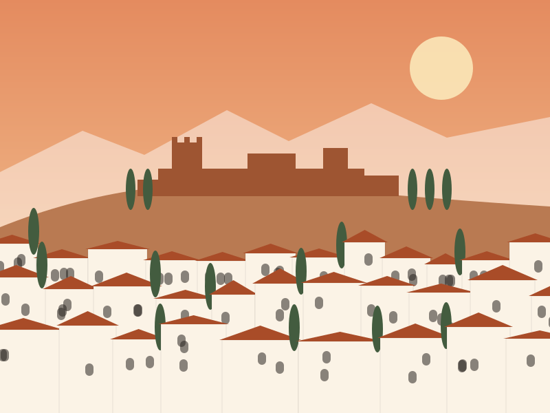
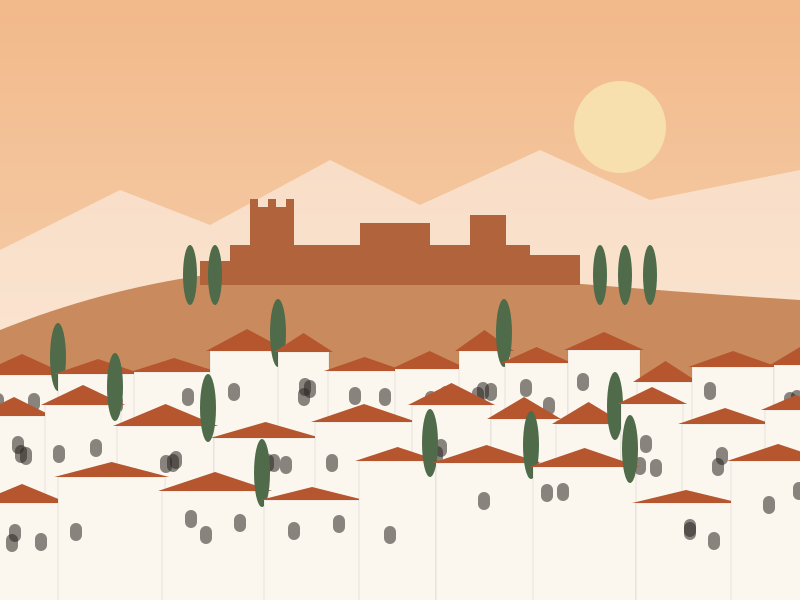
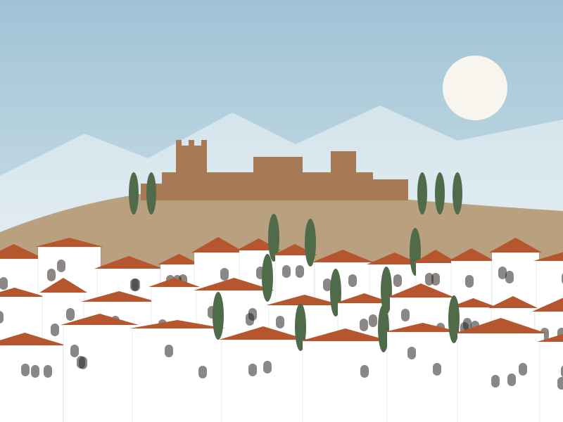
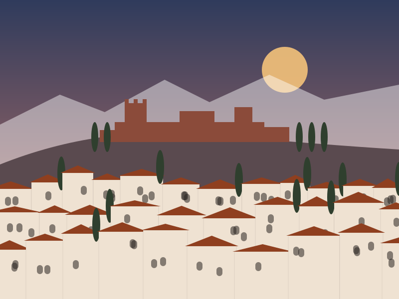

Carmen del Mirador
Terraza privada con vistas directas a la Alhambra y Sierra Nevada.
135 € / noche
Ver detalles
Cuatro casas restauradas entre callejones empedrados, cármenes y aljibes del Albayzín. Patios con jazmín, terrazas con vistas y todo a un paseo del centro.

Somos una familia granadina que restauró casas tradicionales respetando su alma morisca, con el confort que necesitas.
En el corazón del barrio Patrimonio de la Humanidad, cerca de Plaza Larga, Calderería y el Paseo de los Tristes.
Llegada autónoma con caja de llaves o recibimiento personal. Te esperamos a la hora que llegues.
El mejor precio garantizado reservando con nosotros, sin comisiones de plataformas y con cancelación flexible.

Terraza privada con vistas directas a la Alhambra y Sierra Nevada.


Ático luminoso a dos calles del mirador más famoso de Granada.
Desayunar en la terraza mirando la Alhambra no tiene precio. La casa, impecable y llena de detalles.
Perfect location to explore the Albayzín on foot. Our host gave us the best tapas tips in town!
El patio del Aljibe es un oasis. Fresquito en pleno agosto y silencioso por la noche. Repetiremos.
Escríbenos y te respondemos en menos de 2 horas.